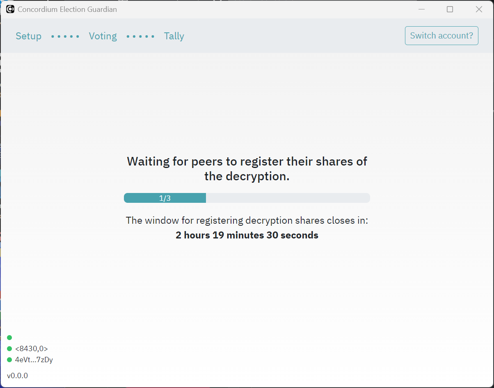
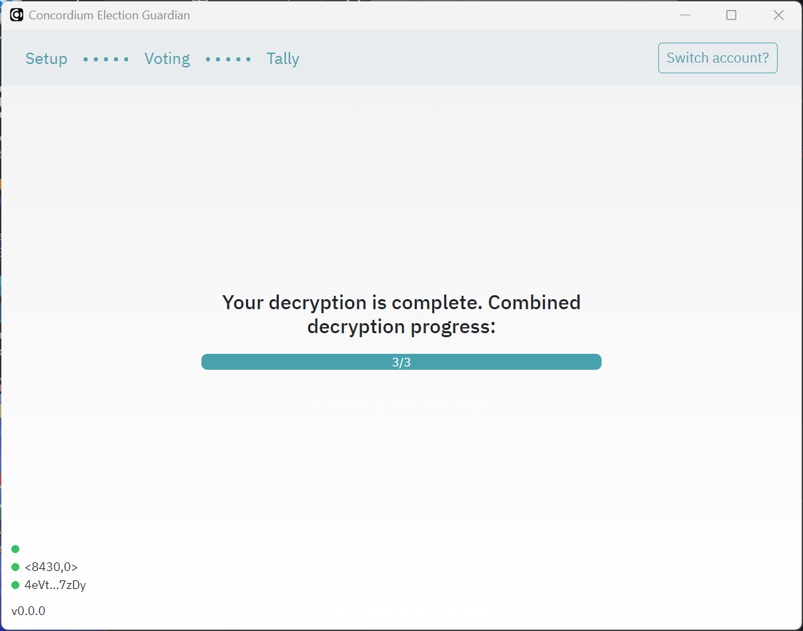

Guardians#
The guardian (via the guardian application) participates in all three phases of the election: the setup phase before the election, they may cast votes during the election phase, and the tally phase at the end of the election.
The setup phase ensures that the election tallying is decentralized. A number of guardians as defined by the election parameters in the smart contract register their public keys in the smart contract to say that they will tally election votes. After the election closes, the guardians decrypt their share of the votes and send the decrypted tally back to the smart contract. In this way, no one party tallies the votes for the election, ensuring privacy of the votes. Correctness of the result follows from the zero-knowledge proofs generated by the guardians to prove that they performed all steps correctly.
Note
Guardians cannot use the Desktop wallet or Concordium Legacy Wallet because these wallets cannot export account keys.
Pre-setup#
The guardians must give account addresses to the organizer of the election. If you need to know how to find your account address, see Find and share your account address
Guardians must download and install the Guardian desktop application that is created by the election coordinator.
Setup#
Before the election opens, the guardians must use the Guardian app to create their key pairs, register encrypted shares, and generate their secret key share to be used to decrypt the tally after the election.
Generate guardian keys#
Before the election opens, the guardians must use the Guardian app to generate a pre-key.
Open the Guardian app.
To connect your account to the Guardian app, you must add your export file for your private account keys. For information about how to generate an export file, see Export a private key.

Once you have added the export file, enter a password.
Click Generate guardian key to create your secret key and register your public key in the election smart contract.
The progress dialog shows the status. Click Send key registration to complete the process.

Once you have generated your pre-key you must wait until the other guardians have done the same.

Generate and register encrypted shares#
Once all guardians have generated their keys as described above, each guardian must go through the steps below to generate encrypted shares of their secret key for the other guardians.
Click Generate encrypted shares.
Click Register encrypted shares to register the encrypted shares information to the election smart contract.

Once you have generated and registered your encrypted shares you must wait until the other guardians have done the same.

After the election#
The app retrieves the encrypted tally from the contract automatically.
Generate your decrypted share#
Open the Guardian app.
Click Generate decryption share.

Click Send share registration.

Once you have registered your decryption share you must wait until the other guardians have done the same.
Register the decrypted share in the contract#
The final step creates a proof that can be checked by others to determine that the election has been fair.
Click Generate decryption proof.

Click Send proof registration.

Once you have registered your decryption proof you must wait until the other guardians have done the same.

After all guardians have registered decryption proofs, the decryption is shown as complete.
Uninstall the app#
Once the election is final, guardians should uninstall the app. The instructions below describe how to uninstall the app for each platform.
Windows#
Uninstall the app as you uninstall all apps on Microsoft.
Delete the folder C:\Users\<user>\AppData\com.concordium.guardian.<network>.<contract-index>.<contract-subindex> to remove all guardian keys.
MacOS#
Uninstall the app as you uninstall all apps on MacOS.
Delete the folder ~/Library/Application Support/com.concordium.guardian.<network>.<contract-index>.<contract-subindex> where ~ represents either $HOME or /Users/<username> to remove all guardian keys.
Linux#
On linux, the application data is stored in one of two places depending on your system:
$XDG_DATA_HOME/com.concordium.guardian.<network>.<contract-index>.<contract-subindex>$HOME/.local/share/com.concordium.guardian.<network>.<contract-index>.<contract-subindex>
Delete this folder to remove all guardian keys.

{kind=link}
{kind=link}
{kind=link}
{kind=link}
{kind=link}
{kind=link}
{kind=link}
{kind=link}